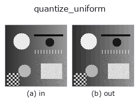

gray op• Data kinds: image → image
• Call: fullseye.apply(img, "quantize_uniform", a=0.5, b=0.5) (2-D model = एक image + दो scalar knobs a,b∈[0,1])

*Figure synthetic 128×128 input पर सच में चलाकर मिला output है। बाईं ओर input, दाईं ओर output। Point clouds ऊपर से देखे गए scatter के रूप में (brightness = z), 1-D series line के रूप में, volumes z दिशा में maximum-intensity projection के रूप में, videos बीच के frame के रूप में, complex images amplitude के रूप में, और जो return values चित्र नहीं बन सकते वे स्वयं values के रूप में दिखाए जाते हैं।*
Knob a को बदलकर (0.1 / 0.5 / 0.9, दूसरा knob default पर):
▸ quantize_uniform: knob a को बदलने का figure (docs site)
*Knob b output नहीं बदलता (मापा गया: 0.1 / 0.5 / 0.9 पर एक जैसा)।*
दूसरी images पर भी (synthetic scene / photo / coins। ऊपर की row में inputs, नीचे की row में उनके outputs। Knobs default पर):
▸ quantize_uniform: दूसरी images पर output (docs site)
*चौथा column colour (H,W,3) input है। यह op channels को पार किए बिना colour संभालता है (colour channel को तीसरे spatial axis की तरह convolve नहीं करता)।*
Uniform quantiser (rounding)। a bit की संख्या 1 से 8 है, b इस्तेमाल नहीं होता।
> नीचे का विस्तृत विवरण मूल text में है — सारांश और headings का अनुवाद हो चुका है।
round(x * (L-1)) / (L-1)、L = 2**bits。刻みは Δ = 1/(L-1)。
xpil_posterize との違いはここで、無視できない: あちらは PIL の実装で 下位ビットを切り捨てるので、出力の平均が入力より Δ/2 だけ低い。一様分布の入力で実測すると、bits=4 で平均誤差 -0.0312(理論 -Δ/2 = -0.03125)。分散はどちらも Δ²/12 で同じだが、偏りがある分だけ二乗誤差が
切り捨て: Δ²/12 + (Δ/2)² = Δ²/3 丸め: Δ²/12
と 4 倍ちがう。明るさを測る前段に置くなら丸めでなければならない。
適用条件と誤差(閉形式): 入力が刻みに対して十分ばらついている(量子化雑音が入力と無相関とみなせる)とき、誤差は [-Δ/2, +Δ/2] の一様分布で、平均 0・分散 Δ²/12。この仮定が崩れるのは平坦部で、そこでは誤差が信号と相関して縞(バンディング)になる —— 誤差を雑音として扱いたいなら dither_ordered か dither_floyd_steinberg を通すこと。段差が見えているかは banding_map で測れる。
• gallery2d_gray_arith family guide
• Sample data catalog (DL URL / license) — 2-D के लिए skimage.data (BSD/public) + synthetic, 3-D के लिए real data sources (Stanford/PDS आदि) के DL URL।
• Operators का स्रोत और संदर्भ — इस op family के मूल research/methods के स्रोत।
• Algorithm का मानक स्रोत (लेखक, वर्ष) और उपयोग ऊपर की family usage guide में दिए गए हैं।
नीचे का program सच में चलता है, यह जाँचा गया है (figure वाला ही input)। Studio की help में यह block buttons बन जाता है, जिनसे इसे वहीं load करके चलाया जा सकता है।
quantize_uniform 0.50 0.50
▸ यह pipeline load करें · Load करके चलाएँ
• gallery2d_gray_arith — py -3.11 examples/gallery2d_gray_arith.py
image को input के रूप में लेते हैं)identity · gaussian · mean_box · bilateral · unsharp · median · min_filter · max_filter
gray)gamma · quantize_lloyd_max · quantization_error · dither_ordered · dither_floyd_steinberg · companding_mu_law · banding_map · invert
*Provenance: ops.py — 2D operator registry. यह per-op note tools/opdocs.py md से अपने-आप generate होता है (हाथ से edit न करें)।*
© 2026 Kazufumi Furuse — Fullseye operator documentation. Licensed under Apache-2.0.